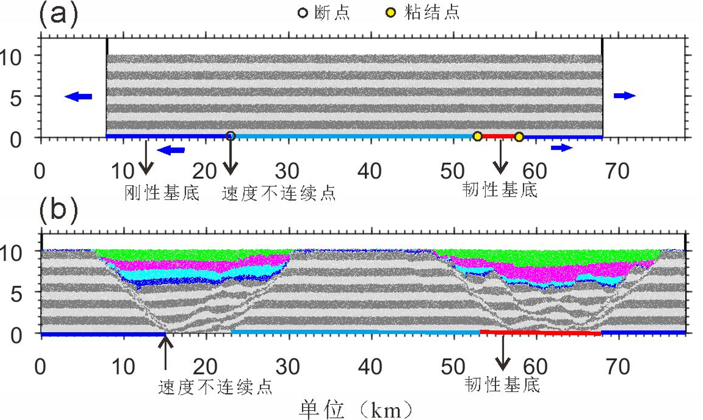

第33专题 沉积盆地矿产资源综合勘察
地 点：北京 北京国际会议中心
时 间：2019年10月29日
题 目：基底性质差异对东海陆架盆地构造特征和演化的影响
报告人：李长圣 1，余一欣 2，周心怀3 ，陈石 2
1. 东华理工大学 地球科学学院
2. 中国石油大学（北京）地球科学学院
3. 中海石油（中国）有限公司上海分公司
东海陆架盆地位于东亚大陆边缘，自西向东可分为3大构造带，即西部坳陷带、中部隆起带和东部坳陷带(侯方辉,2014)。其垂向结构鲜明：西部坳陷带主要为箕状断陷结构，东断西超，盆地平均深度约为3000~4000 m，构造以半地堑为特征；东部坳陷带为对称多断层地堑式结构，盆地平均深度达7000~9000 m。本文选取西部坳陷带的丽水凹陷和东部坳陷带的西湖凹陷为主要研究对象。两个凹陷典型地震剖面显示两者构造特征存在明显差异性：丽水凹陷断裂发育整体呈不对称样式，凹陷内断裂主要向西倾斜；西湖凹陷则表现为双断式的对称地堑结构。为了进一步探讨引起东海陆架盆地东西段构造特征存在明显差异性的原因，本文选择使用构造模拟方法开展工作。
近二十年来，数值模拟及定量化迅速发展，使得伸展区断裂构造由单纯定性构造研究向定量分析的转变(李三忠等,2003)。为了研究东海陆架盆地东西部基底强度差异性对盆地东西部坳陷带构造特征的影响，设置了一组离散元数值模拟实验。颗粒细观参数见李长圣(2019)，左侧基底为刚性基底，随着拉张进行，速度不连续点（断点）会随蓝色基底一起移动；红色基底模拟韧性基底，有相互叠合的颗粒组成，青色基底固定不动，青色基底和蓝色基底与红色基底连接处为粘结点，随着右侧蓝色基底向右边移动，红色的韧性基底逐渐被拉长，模拟韧性基底的伸展作用。

图1 数值模拟实验
实验模拟结果表明，当基底设置为刚性基底时（见图1a），伸展作用下凹陷构造特征表现为不对称式半地堑特征，控凹断裂倾向向东，根部位于刚性基底速度不连续点处，导致沉积中心位于凹陷西侧，以沉积中心为界，凹陷东侧断裂发育数量明显多于西侧，主要断裂倾向向西（见图1b左侧凹陷）；当基底设置为韧性基底时（见图1a），伸展作用下凹陷构造特征表现为对称式地堑结构，双断式控凹断裂根部均位于韧性基底内部，凹陷内断裂以沉积中心为界，东西两侧倾向相反的断裂发育数量基本一致（见图1b左侧凹陷）。
结论
实验模拟结果与研究区剖面主要构造特征相似，表明受基底强度的影响，东海陆架盆地西部坳陷带（丽水凹陷）和东部坳陷带（西湖凹陷）构造演化存在明显的差异性，导致区域“东西分带”特征。
致谢
感谢 RICE 大学Julia K. Morgan教授提供的离散元软件RICEBAL (v. 5.4, 修改自Peter Cundall的TRUBAL v. 1.51) 。本文数值模拟基于课题组自主研发的离散元程序VBOX完成，更多构造模拟实例见www.geovbox.com。
参考文献
- 侯方辉.2014.东海陆架盆地南部中生代地层分布及构造特征研究.博士学位论文.中国海洋大学.
- 李长圣.2019.基于离散元的褶皱冲断带构造变形定量分析与模拟.博士学位论文.南京大学.
- 李三忠,岳云福,高振平等. 2003. 伸展盆地区断裂构造特征与成因.华南地质与矿产, (02):1-8.